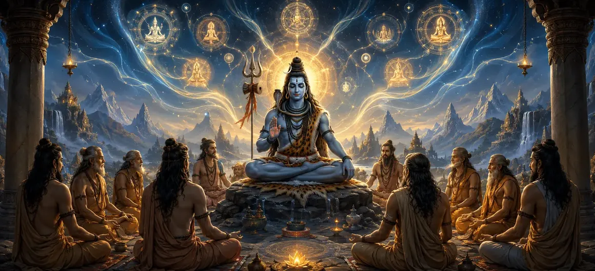

शैव शिक्षण के सिद्धांत - भाग 2
गहन आध्यात्मिक प्रवचन को जारी रखते हुए, वायवीय संहिता का अध्याय 6 (भाग 2) अमूर्त सत्तामूलक सिद्धांत को परिवर्तनकारी योग अभ्यास के साथ जोड़ता है, जिसमें शैव शिक्षाओं को आत्मसात करने के लिए आवश्यक सटीक विषयों का विवरण दिया गया है।
भगवान वायु उन्नत ध्यान अवशोषण, श्वास सामंजस्य और शुद्ध जागरूकता की खेती के माध्यम से ऋषियों का मार्गदर्शन करते हैं, यह दर्शाते हैं कि कैसे बौद्धिक समझ प्रत्यक्ष, जीवित आध्यात्मिक अनुभूति में परिपक्व होती है।
यह विस्तारित अध्याय शिव पुराण के भीतर गहन आंतरिक जागृति चाहने वाले अभ्यासियों के लिए एक अनिवार्य मैनुअल के रूप में कार्य करता है।
अध्याय 6 (भाग 2) व्यापक हाइलाइट्स
योगिक एकीकरण
आध्यात्मिक सिद्धांतों को दैनिक ध्यान अवशोषण में अनुवाद करना।
प्राण सामंजस्य
बेचैन मन को स्थिर करने के लिए महत्वपूर्ण सांस धाराओं पर काबू पाना।
आंतरिक रोशनी
हृदय में निवास करने वाले शिव के परम प्रकाश का चिंतन करना।
परिवर्तनकारी भक्ति
पूर्ण बौद्धिक स्पष्टता के साथ भावनात्मक भक्ति का मेल।
द्वंद्वों को विघटित करना
सर्वोच्च जागरूकता के माध्यम से विषय-वस्तु अलगाव पर काबू पाना।
समय की महिमा का पुल
आध्यात्मिक निपुणता स्थापित करना जो स्वाभाविक रूप से आत्मा को अध्याय 7 के लिए तैयार करता है।
इस अध्याय में विस्तृत मुख्य विषय
शैव सिद्धांतों पर व्यावहारिक ध्यान
भगवान वायु इस बात पर जोर देते हैं कि आध्यात्मिक तत्वों को बौद्धिक रूप से जानना केवल पहला कदम है; सच्चा फल उन पर अपनी चेतना की जीवित वास्तविकता के रूप में ध्यान करने से आता है।
साधक को निर्देश दिया जाता है कि वह अपनी इंद्रियों को बाहरी विकर्षणों से दूर रखे और मन को परा शिव की अचल साक्षी में स्थापित करे।
स्थिर अभ्यास के माध्यम से, अलगाव का भ्रम दिव्य जागरूकता के निरंतर प्रवाह में घुल जाता है।
प्राण और मन का सामंजस्य
प्रवचन सांस (प्राण) और विचार तरंगों (चित्त-वृत्ति) के बीच घनिष्ठ संबंध पर प्रकाश डालता है।
लयबद्ध नियंत्रण के माध्यम से महत्वपूर्ण धाराओं को शांत करने से, मन का अशांत सागर स्वाभाविक रूप से शांति में स्थिर हो जाता है।
यह आंतरिक शांति सर्वोच्च चेतना की बिना शर्त प्रतिभा को प्रतिबिंबित करने के लिए आवश्यक दर्पण प्रदान करती है।
हृदय कमल में परम प्रकाश का चिंतन
इस अध्याय में सिखाया गया एक केंद्रीय अभ्यास मन को आध्यात्मिक हृदय केंद्र (दहर आकाश) पर केंद्रित करना है।
इस सूक्ष्म अंतरिक्ष के भीतर दिव्य रोशनी की अविचल लौ जलती है - भगवान शिव और शक्ति की उपस्थिति एक के रूप में एकजुट होती है।
इस आंतरिक प्रकाश पर ध्यान करने से अवशिष्ट अशुद्धियाँ जल जाती हैं और आत्मा का अमर वैभव प्रकट हो जाता है।
भक्ति और झाना का तालमेल
भगवान वायु बताते हैं कि सर्वोच्च ज्ञान (ज्ञान) और गहरी भक्ति (भक्ति) विरोधी मार्ग नहीं हैं, बल्कि एक ही आध्यात्मिक पक्षी के दो पंख हैं।
ज्ञान सत्य की तीव्र स्पष्टता प्रदान करता है, जबकि भक्ति उस सत्य को अथाह प्रेम और समर्पण से भर देती है।
साथ में, वे अहंकार को पिघलाते हैं और आत्मा को परमात्मा के साथ शाश्वत संपर्क में सील कर देते हैं।
सूक्ष्म ध्यान संबंधी बाधाओं पर काबू पाना
यह पाठ आध्यात्मिक पथ पर आध्यात्मिक घमंड, सूक्ष्म आलस्य और प्रगति के रूप में छिपी व्याकुलता जैसे सूक्ष्म नुकसानों के प्रति उम्मीदवारों को सावधान करता है।
निरंतर सतर्कता, विनम्रता और शिव के प्रति समर्पण बनाए रखकर, साधक इन आंतरिक बाधाओं को सफलतापूर्वक पार कर जाता है।
प्रत्यक्ष अनुभूति और अगले चरणों में परिणति
भाग 2 का समापन करते हुए, भगवान वायु ऋषियों को आश्वासन देते हैं कि निरंतर ध्यान में डूबे रहने से बंधन का विघटन होता है और सर्वोच्च मुक्ति का उदय होता है।
यह ठोस योगिक आधार पाठक को अगले अध्याय में 'समय की महिमा' का पता लगाने के लिए तैयार करता है।
अध्याय 6 की विस्तारित मुख्य शिक्षाएँ (भाग 2)
जीवन जीने का अभ्यास
ध्यान के माध्यम से ऑन्टोलॉजिकल सिद्धांतों को सीधे अनुभव किया जाना चाहिए।
प्राणिक नियंत्रण
श्वास को शांत करने से मन की अशांत तरंगें स्थिर हो जाती हैं।
हृदय चिंतन
हृदय के भीतर दिव्य जागरूकता की आंतरिक लौ पर ध्यान केंद्रित करना।
भक्ति-जन एकता
पूर्ण समर्पण के लिए बौद्धिक स्पष्टता को भावनात्मक समर्पण के साथ जोड़ना।
सतर्क जागरूकता
विनम्रता और दृढ़ता के माध्यम से सूक्ष्म आध्यात्मिक बाधाओं पर काबू पाना।
महिमा का प्रवेश द्वार
साधक को समय और अनंत काल की खोज के लिए सहजता से तैयार करता है।
विस्तारित आध्यात्मिक चिंतन
सच्ची आध्यात्मिकता केवल दार्शनिक मान्यताओं का संग्रह नहीं है, बल्कि सांस, विचार और हृदय का जीवंत परिवर्तन है। जब हम अपनी जागरूकता को भीतर के शांत अभयारण्य में स्थापित करते हैं, तो दुनिया का कोलाहल कम हो जाता है, और भगवान शिव की उज्ज्वल शांति स्वाभाविक रूप से चमक उठती है।
अध्याय 6 का संदेश जीना (भाग 2)
मानसिक अशांति को दूर करते हुए प्रत्येक दिन सचेतन श्वास और मौन आत्मनिरीक्षण के लिए कुछ क्षण समर्पित करें।
अपने दैनिक कर्तव्यों को भक्ति की गहरी भावना से भरें, प्रत्येक कार्य को सर्वोच्च शिव की पूजा के रूप में अर्पित करें।
आंतरिक विनम्रता विकसित करें, यह पहचानते हुए कि सभी आध्यात्मिक सफलताएँ दैवीय कृपा और निरंतर अभ्यास से आती हैं।
विस्तृत प्रमुख आध्यात्मिक अवधारणाएँ
हृदय के भीतर सूक्ष्म स्थान पर ध्यान।
सांस की धाराओं और विचार तरंगों में सामंजस्य स्थापित करना।
भक्ति और ज्ञान का सामंजस्यपूर्ण एकीकरण.
दिव्य चेतना की आंतरिक लौ पर चिंतन करना।
मार्ग में सूक्ष्म आध्यात्मिक बाधाओं पर काबू पाना।
शिव के साथ एकता की निरंतर आंतरिक भावना को विकसित करना।
विस्तृत अध्याय सारांश
वायवीय संहिता अध्याय 6 (भाग 2) शैव शिक्षाओं के व्यावहारिक योग कार्यान्वयन के लिए एक विस्तृत मार्गदर्शिका प्रदान करता है। प्राणिक सामंजस्य, हृदय-केंद्र ध्यान, भक्ति और ज्ञान के तालमेल और सूक्ष्म बाधाओं पर काबू पाने में महारत हासिल करके, अभ्यासकर्ता अमूर्त दर्शन को प्रत्यक्ष अनुभूति के साथ जोड़ता है। यह मजबूत अध्याय आकांक्षी को शिव पुराण की शानदार आध्यात्मिक यात्रा को जारी रखते हुए 'समय की महिमा' में निर्बाध रूप से आगे बढ़ने के लिए तैयार करता है।
अक्सर पूछे जाने वाले प्रश्न
1. वायवीय संहिता अध्याय 6 (भाग 2) का मुख्य विषय क्या है?
भाग 2 सैद्धांतिक ऑन्कोलॉजी से व्यावहारिक ध्यान विषयों की ओर स्थानांतरित होता है, जिसमें यह पता लगाया जाता है कि साधक एकाग्रता, सांस पर नियंत्रण और भक्ति के माध्यम से शैव सिद्धांतों को कैसे आत्मसात करता है।
2. भाग 2, भाग 1 पर कैसे आधारित है?
जबकि भाग 1 ने आध्यात्मिक तत्वों और बंधन के तंत्र की स्थापना की, भाग 2 उन बाधाओं को पार करने और शुद्ध चेतना का एहसास करने के लिए प्रत्यक्ष योग पद्धति प्रदान करता है।
3. इस अध्याय में किन ध्यान तकनीकों पर जोर दिया गया है?
अध्याय शिव के सर्वोच्च प्रकाश, स्थिर सांस विनियमन और जागरूकता के विशाल कैनवास में मानसिक तरंगों के विघटन पर आंतरिक चिंतन पर जोर देता है।
4. इस प्रवचन में अटूट भक्ति का क्या महत्व है?
अटूट भक्ति (भक्ति) हृदय को सर्वोच्च बुद्धि से जोड़ती है, महत्वपूर्ण पुल के रूप में कार्य करती है जो बौद्धिक ज्ञान को प्रत्यक्ष आध्यात्मिक अनुभूति में बदल देती है।
5. इन शिक्षाओं के अनुसार अभ्यासी को मुक्ति कैसे प्राप्त होती है?
मुक्ति तब प्राप्त होती है जब व्यक्तिगत मन निरंतर ध्यान अवशोषण और दिव्य कृपा के अवतरण के माध्यम से परा शिव के साथ पूरी तरह से विलीन हो जाता है।
6. इस अध्याय के बाद नेविगेशन के लिए अगला अध्याय कौन सा है?
नेविगेशन के लिए अगला अध्याय 'समय की महिमा' है।
"जब सांसें शांत हो जाती हैं और भक्ति हृदय को पिघला देती है, तो साधक परा शिव की उज्ज्वल रोशनी को अपने भीतर अनंत काल तक चमकता हुआ देखता है।"
वायवीय संहिता के माध्यम से जारी रखें
अध्याय 6 (भाग 2) समाप्त। अगले अध्याय, समय की महिमा को जारी रखें।